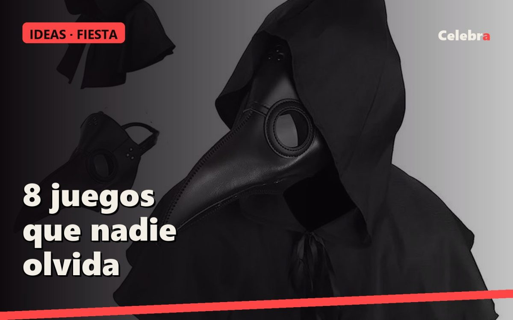

8 juegos para una fiesta de Halloween que nadie olvida

Una fiesta de Halloween se sostiene con tres cosas: la luz, la música y un par de juegos que rompan el hielo. Estos ocho funcionan con grupos de seis a veinte personas y no necesitan más que lo que ya hay en casa.
Para empezar la noche
- El médico de la peste. Un jugador se pone la máscara de médico de la peste y sale de la habitación. Los demás se reparten en secreto: uno es "el contagiado". El médico vuelve, apaga la luz y tiene tres preguntas de sí o no para cada persona, sin quitarse la máscara. Si acierta quién es el contagiado, gana; si no, el contagiado elige al siguiente médico. La máscara hace el 80 % del juego.
- Adivina el disfraz. Cada invitado lleva en la espalda una nota con un personaje de terror que no ha visto. Tiene que adivinarlo preguntando a los demás con preguntas de sí o no. El último en adivinar paga la siguiente ronda.
- Historia encadenada. En círculo, a oscuras, con una linterna. El que tiene la linterna dice una frase de una historia de miedo y pasa la luz. Nadie puede repetir una palabra que ya se haya dicho. El que se equivoca, bebe o hace una prenda.
Cuando ya hay ambiente
- La momia. Por parejas, un rollo de papel higiénico por pareja y dos minutos. La momia más completa gana. Ridículo garantizado y las mejores fotos de la noche.
- El esqueleto habla. Sentad un esqueleto articulado en una silla con un móvil escondido detrás. Un invitado, desde otra habitación, le pone voz por videollamada y hace preguntas incómodas a cada recién llegado. Funciona mejor cuanto más serio se ponga el esqueleto.
- Búsqueda a oscuras. Diez arañas de plástico escondidas por la casa, luz apagada, una linterna por equipo y cinco minutos. El equipo con más arañas elige la música de la próxima media hora.
Para terminar
- Ángel o demonio. Dos invitados, uno con alas de ángel y otro con cuernos, hacen de jurado del concurso de disfraces. El resto vota en secreto en dos categorías: el que más asusta y el más gracioso. El ángel anuncia al gracioso, el demonio al que asusta.
- El susto final. Antes de que se vaya la gente, alguien se esconde en el pasillo de salida con la máscara puesta y la luz apagada. Solo uno. Solo una vez. Es el momento que se cuenta al día siguiente.
Consejos que ahorran disgustos
- Anunciad los juegos con un cartel en la nevera: la gente se apunta sola.
- Un juego cada 45 minutos, no más. Entre juego y juego, música y comida.
- Si hay niños, los juegos 2, 4 y 6 valen para ellos; el 8 no.
Lo que sale en este artículo
Talla única
Máscara y capa de médico de la peste
Disfraz completo de talla única: máscara de pico, capa con capucha y sombrero
24,90 €32,90 €

Esqueleto articulado decorativo
Brazos, piernas y mandíbula móviles. Se sienta, se cuelga o se posa
46,90 €59,90 €

Alas de ángel con aureola y varita
Alas de 80 cm de plumas blancas, aureola y varita a juego. Adulta y niña
32,90 €39,90 €